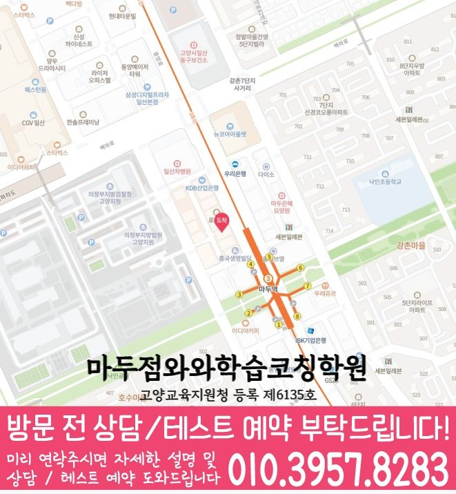

경기 고양시 · 마두점
백석동 초등 수학학원
백석동에서 초등 수학학원을 찾을 때 확인할 마두점 안내입니다. 과목별 학년과 실제 방문 주소를 먼저 살펴보고 학생의 교재·학교 일정에 맞춰 상담을 준비해 주세요.
방문 지점과 안내 학년
- 방문 지점
- 와와학습코칭센터 마두점
- 주소
- 경기 고양시 일산동구 중앙로 1191 굿모닝법조타운 1 604호
- 수학
- 초1~초6
안내에 없는 학년은 수강 가능 여부를 확인해 주세요. 아래 학년은 현재 모집 중인 시간표를 뜻하지 않습니다.
국어는 중·고등 내신 수업을 진행하며, 수리논술은 운영하지 않습니다. 세부 과학·사회 과목은 센터에 확인해 주세요.
마두점 과목별 수강 안내
- 수학
- 초1~초6
표에 없는 학년이나 선택과목은 현재 개설 여부를 확인해야 합니다. 수강이 가능한 것으로 안내된 학년이라도 모집 상태와 학생에게 맞는 시간표는 상담에서 다시 확인해 주세요.
- 등록 학원명
- 마두점와와학습코칭센터학원
- 등록번호
- 고양교육지원청 등록 제6135호
백석동 학교·교재 상담 준비
백석동 지역의 학교 참고 목록입니다. 학생이 실제 사용하는 교과서·평가 범위와 함께 상담하면 필요한 수업을 구체적으로 확인할 수 있습니다.
초등학교 참고 목록
학교명은 지역 상담을 위한 참고 정보입니다. 해당 학교 학생의 현재 재원 여부나 학교별 전담반 개설을 뜻하지 않습니다. 학교 시험 범위와 교재를 준비해 수업에 반영할 수 있는지 확인해 주세요.
계산 답과 풀이의 이유를 함께 확인하기
초등 수학 상담에서는 현재 배우는 단원과 스스로 해결한 과정을 함께 보여 주세요. 계산이 느린 경우와 문제의 뜻을 이해하지 못한 경우는 필요한 설명이 다릅니다.
- 최근 풀었던 문제에서 조건에 표시하고, 무엇을 구해야 하는지 자기 말로 설명해 봅니다.
- 계산이 틀린 줄을 찾아 자릿값·연산 순서·기호 중 어떤 부분을 놓쳤는지 구분합니다.
- 수나 조건이 다른 문제를 한 번 더 풀고, 같은 방법을 사용한 이유를 말해 봅니다.
위 활동은 학생이 현재 배우는 범위에서 해 볼 일반 학습 점검입니다. 해당 센터의 확정 수업 절차나 성적 향상 사례를 뜻하지 않습니다.
마두점 학습 관리 안내
센터 제공 자료에 기재된 학습 관리 방식입니다. 실제 적용 학년·과목, 평가 주기와 안내 방법은 등록 전에 확인해 주세요.
평가·결과 확인 · 초등·중등
초등·중등 정기고사를 매월 실시하고 시험 분석지를 전송한다고 안내합니다.
교습비와 수업 시간
수업 시간·횟수·과목에 따라 비용이 달라질 수 있습니다. 센터의 교습비 안내 자료를 확인하고 학생이 등록할 과정의 금액, 교재비와 추가 비용을 상담에서 대조해 주세요.
이 페이지의 과목·학년 조건으로 바로 적용할 수 있는 개별 금액을 확인하기 어렵습니다. 지점 전체 자료에서 과정 구성과 적용 조건을 확인해 주세요.
상담에서 함께 확인할 비용 조건
- 과목당 금액인지 여러 과목을 묶은 과정인지, 학생의 실제 학년에 적용되는지 확인해 주세요.
- 납부 기간, 주당 횟수와 1회 수업 시간, 내방·추가 학습 타임의 구성을 함께 확인해 주세요.
- 공부9도·AI 학습·교재비가 포함인지 별도인지 확인하고 최종 등록 금액을 안내받으세요.
운영 시작 참고: 평일 오후 2시반 이후. 과목별 실제 수업 시작 시간은 다를 수 있습니다.
토요일 가능. 참고 시간: 토요일 오전 10시~오후 1시 영어.
마두점 찾아오는 길
경기 고양시 일산동구 중앙로 1191 굿모닝법조타운 1 604호
위치 안내 이미지 보기

010-6839-8283건물과 주변 기준점
굿모닝법조타운 6층이며, 스타벅스 마두역점이 있는 건물입니다.
센터에서 제공한 위치 안내입니다. 주변 상호·출입 동선은 달라질 수 있으므로 위 주소를 기준으로 방문 경로를 확인해 주세요.
상담 전에 준비할 내용
- 학교·학년과 목표 — 재학 학교, 학년과 어려운 부분을 알려 주세요.
- 실제 학습 자료 — 현재 학교 단원, 풀이가 남은 문제집과 어려웠던 문장제 한두 개를 준비해 주세요.
- 가능한 시간 — 학교 이후 이동 시간과 희망 요일을 함께 알려 주세요.
문의 시 백석동 · 마두점 · 희망 과목과 학년을 말씀해 주세요.
학습코칭 안내 자료
학습코칭 공통 안내 이미지 보기

백석동 수강·방문 자주 묻는 질문
마두점의 초등 수학 안내 학년은 어떻게 되나요?
마두점 자료의 안내 학년은 다음과 같습니다. 수학 초1~초6. 안내에 없는 학년은 수강 가능으로 판단하지 말고, 현재 모집 여부와 학생에게 맞는 시간표를 확인해 주세요.
마두점에서 초등 수학 주말 수업도 가능한가요?
마두점의 제공 자료 기준입니다. 토요일 가능. 참고 시간: 토요일 오전 10시~오후 1시 영어. 이 안내만으로 수학의 주말 수업이 개설되어 있다고 볼 수는 없습니다. 학생의 학년·희망 과목으로 현재 모집 여부와 요일·시작 및 종료 시각을 확인해 주세요.
마두점의 초등 수학 교습비는 어떻게 확인하나요?
마두점의 개별 교습비 자료는 있지만, 이 페이지의 과목·학년 조건으로 바로 적용할 수 있는 금액은 확인되지 않습니다. 교습비 안내 자료와 상담에서 납부 기간·횟수·1회 수업 시간, 교재비와 추가 프로그램 포함 여부를 대조해 최종 등록 금액을 확인해 주세요.
마두점 상담을 위해 어디로 방문하나요?
백석동 안내에 연결된 실제 방문 지점은 마두점입니다. 경기 고양시 일산동구 중앙로 1191 굿모닝법조타운 1 604호입니다. 굿모닝법조타운 6층이며, 스타벅스 마두역점이 있는 건물입니다. 수업 장소와 예약 시간을 확인한 뒤 방문해 주세요.
초등 수학 상담에 무엇을 준비하면 좋을까요?
학교·학년과 희망 과목을 먼저 알려 주고, 현재 학교 단원, 풀이가 남은 문제집과 어려웠던 문장제 한두 개 등을 준비해 주세요. 백석동에서의 이동 시간과 가능한 요일, 필요한 수업 범위를 함께 알려 주면 수강 조건을 대조하기 쉽습니다.
주소·등록 정보와 과목별 학년은 제공된 센터 자료를 대조했습니다. 정보 수정: 2026년 9월 29일.